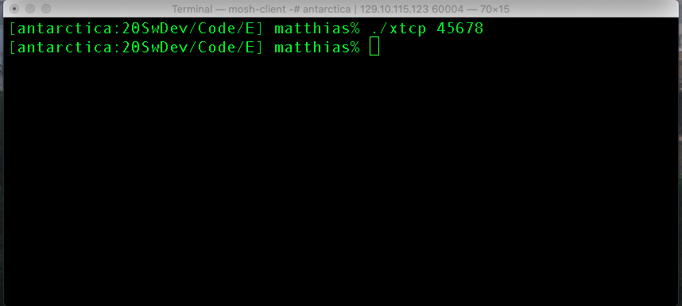
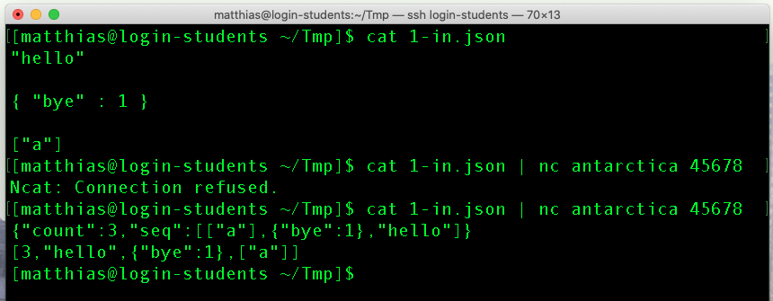

E —
Due Monday, October 10, 9:59:59pm
Purpose to explore the TCP libraries of the chosen programming language; to deliver software as specified; reflect on the language of your choice.
Delivery You must deliver xtcp, Test/, and experience.pdf and assessment.pdf in a directory called E in your repository. The three artifacts are specified in the Task, Test, and Memo sections below.
All auxiliary files must be put into a sub-directory called Other.
Task Develop xtcp, a program that consumes a sequence of well-formed JSON values from the input side of a TCP connection and delivers JSON to the output side of a TCP connection after the input side is closed.
The program’s takes at most one command-line argument. This argument specifies the port to which the program connects (on the default network card). If there is no command-line argument, the program uses the default port 4567. Also, the program waits for at most 3 seconds for a client to connect; if no client connects, the program terminates with an error.
The program’s functionality is the same as xjson from C —
[login-students] $ cat 1-in.json | nc login-students.ccs.neu.edu 45678 |
Hint The netcat program is likely not pre-installed on modern Windows systems. Windows users should may wish to visit download and install the nmap site, download the ncat executable, and add it to their path.


As mentioned in class, the phrase "integration
test" is used here because you are welcome to integrate the solution
for C —
Test Create three integration tests for xtcp in the directory Test/.
A test always consists of inputs and expected outputs. For this course, a test consists of two files: n-in.json, the input file, and n-out.json, the expected output file, where n is any positive integer between 1 and the demanded number of tests.
Summary Memo Write two half–page memos: experience.pdf and assessment.pdf.
The first reports your experiences with your exploratory programming tasks. The second one states your evaluation of the language based on this experience.
Imagine you are writing to your manager’s manager.
You must use an 11-point font (or larger). The white-space margins on your page must be at least 1 inch wide on all sides.
If your assessment leads you to the conclusion that you wish to switch to a different language, complete the assignment as specified and contact your instructor to make a 1-1 appointment immediately.